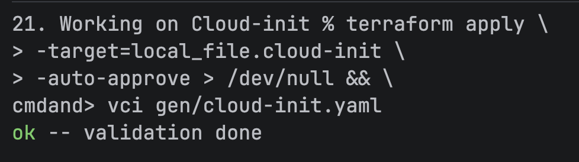

Solution
Setup (setup.tf)
The project was created via the init.sh script, which created the base directory and the setup.tf file: Assume this script was run to create the following exercises. If anything was altered or omitted, the setup section of that exercise's solution page will specify which steps were taken.
Providers
This file contains the base components used across many exercises, such as the required providers:
terraform {
required_providers {
hcloud = ...
local = {
source = "hashicorp/local"
}
}
required_version = ">= 1.5"
}
In addition to the hcloud provider (see Ex. 19. Cloud-init for starters/1. Solution), the provider for local file interfacing is necessary:
local:
The local provider by Hashicorp enables use of functions that operate on the local file system.
To lean more, visit:
- Terraform Registry - Hashicorp Local Provider
Api Token
The API token was created in the same manner as it was in Ex. 19. Cloud-init for starters/1. Solution.
SSH Keys
The SSH keys allowed to access the server were imported via setup.tf.template:
# Load the common configuration
module "config" {
source = "../Modules/Conf"
}
# Set up SSH keys
resource "hcloud_ssh_key" "sshKeys" {
for_each = module.config.authorizedKeys
name = each.key
public_key = each.value
}
To learn more, visit:
- Terraform Registry - hcloud_ssh_keys Resource
Templates
index.html
The index.html template from the exercise description was copied into the directory 21. Enhancing index.html generation/templates.
It contains the following interpolation sequences for which values will be provided later:
- ${creationDate}
- ${serverName}
- ${ipv4Address}
- ${ipv6Address}
- ${ipv6Subnet}
These sequences will be replaced by the templatefile function.
To learn more, visit:
- Hashicorp - templatefile function
cloud-init.yaml
The cloud-init.yaml template was created in the directory 21. Enhancing index.html generation/templates.
The configuration was written in HCL (HashiCorp Configuration Language) beforehand and then wrapped in a call to ${yamlencode().
This was done to prevent indentation problems which can occur during string interpolation.
To learn more, visit:
- HashiCorp - yamlencode
- HashiCorp - Terraform language types and values
To enable our webserver to access the dynamically generated index.html file, we need to copy it into the /var/www/html directory.
We also set permission so the file can be read by the reverse proxy we will use to serve the content (nginx).
write_files = [
{
content = "${html}"
path = "/var/www/html/index.html"
permissions = "0644"
owner = "root:root"
}
]
To learn more, visit:
- Cloud-init - Write files
- Linux Foundation - File permissions
All that was left to do is write the instructions for the webserver to be installed and run:
packages = ["nginx"]
runcmd = [
"systemctl enable nginx",
"systemctl start nginx"
]
Terraform
Network configuration
The webpage is supposed to display the webserver's IP addresses, which requires us to create a resource for each IP type:
resource "hcloud_primary_ip" "ipv4" {
name = "primary-ipv4"
location = module.server.serverLocation
type = "ipv4"
auto_delete = true
}
resource "hcloud_primary_ip" "ipv6" {
name = "primary-ipv6"
location = module.server.serverLocation
type = "ipv6"
auto_delete = true
}
It is important to provide both resources with the same location, since the IPs need to be located in the same datacenter for the server creation to work.
We set auto_delete to true. The IP addresses will be deleted by Hetzner once the servers no longer exist (i.e. you call terraform destroy).
To learn more, visit:
- Terraform registry - hcloud_primary_ip
Firewall
To allow web traffic, we need to allow inbound HTTP traffic.
Additionally, set up SSH access and whitelist ICMP packets for easier server access and simpler monitoring.
Add the names "ssh", "icmp", "http" to the list of common firewall rules inside the firewall resource created by the init.sh script:
for name in ["ssh", "icmp", "http"] : name => module.firewall.firewall_rules[name]
Template Processing
index.html
To create the static webpage nginx should serve under the server's IP the file needs to generated by interpolating the strings listed in Templates - index.html
This can be achieved via the previously mentioned templatefile function.
It can replace content in a local file and save the generated output.
The function takes as many arguments as should be replaced as a key-value pair. It matches the provided keys against strings to be interpolated and replaces them with the associated value. We need to pass the attributes of the previously created IP resources to this function to replace the placeholders in the template. This needs to happen after resource creation of the IPs, since the ouput will be a static html file which requires the values to be hard-coded in.
resource "local_file" "index" {
content = templatefile("templates/index.html", {
creationDate = timestamp()
serverName = module.server.serverName_g01
ipv4Address = hcloud_primary_ip.ipv4.ip_address
ipv6Address = hcloud_primary_ip.ipv6.ip_address
ipv6Subnet = hcloud_primary_ip.ipv6.ip_network
})
filename = "gen/index.html"
}
The generated output will be saved to gen/index.htlm:
<!DOCTYPE html>
<html lang="en">
<head>
<title>Template demo</title>
</head>
<body>
<h1>Terraform template file demo created 2026-11-10T12:10:43Z.</h1>
<p>This is server <b>g01</b> with IP addresses:</p>
<ul>
<li>IPV4: <a href="http://2.31.146.28">2.31.146.28</a></li>
<li>IPV6: <a href="http://[2a01:4f8:1c1c:bbd6::]">2a01:4f8:1c1c:bbd6::</a> from subnet 2a01:4f8:1c1c:bbd6::/64</li>
</ul>
</body>
</html>
cloud-init.yaml
The generated html file can now be passed into our cloud-init config.
We need to provide the parameter html with the previously generated file accessible via local_file to interpolate "${html}".
resource "local_file" "cloud-init" {
content = templatefile("templates/cloud-init.yaml", {
html = local_file.index.content
})
filename = "gen/cloud-init.yaml"
}
The generated output will be saved to gen/cloud-init.yaml:
#cloud-config
"packages":
- "nginx"
"runcmd":
- "systemctl enable nginx"
- "systemctl start nginx"
"write_files":
- "content": |-
<!DOCTYPE html>
<html lang="en">
<head>
<title>Template demo</title>
</head>
<body>
<h1>Terraform template file demo created 2026-11-10T12:10:43Z.</h1>
<p>This is server <b>g01</b> with IP addresses:</p>
<ul>
<li>IPV4: <a href="http://2.31.146.28">2.31.146.28</a></li>
<li>IPV6: <a href="http://[2a01:4f8:1c1c:bbd6::]">2a01:4f8:1c1c:bbd6::</a> from subnet 2a01:4f8:1c1c:bbd6::/64</li>
</ul>
</body>
</html>
"owner": "root:root"
"path": "/var/www/html/index.html"
"permissions": "0644"
Verifying the output
To verify the generated cloud-init.yaml file, we can target the local file creation explicitly without creating the server resource.
Supply the option -target=local_file.cloud-init when running terraform apply.
This will only execute the resource creation of the cloud-init file, as well as all other operations it depends on:

This confirms the file is correctly encoded.
Note:
This already creates the IPs on Hetzner's end, since the cloud-init creation depends on the index.html creation, which in turn depends on the IP address resources. Run
terraform destroyafter this step!
Server Creation
To use the common server parameters, load the server module:
module "server" {
source = "../Modules/Server"
}
We then instantiate the server resource with the common parameters and resources, as well as the IP addresses and cloud-init configuration we created in the previous steps.
resource "hcloud_server" "g01" {
name = module.server.serverName_g01
image = module.server.serverImage
server_type = module.server.serverType
location = module.server.serverLocation
ssh_keys = [for key in hcloud_ssh_key.sshKeys : key.id]
firewall_ids = [hcloud_firewall.nginx.id]
public_net {
ipv4 = hcloud_primary_ip.ipv4.id
ipv6 = hcloud_primary_ip.ipv6.id
}
user_data = local_file.cloud-init.content
}
To learn more, visit:
- Terraform Registry - hcloud_server Primary IPs
Note:
The combination of the default server type
cx23and the default locationnbg1might not be available. If this occurs, you can try another location (e.g.fsn1). Keep in mind, the location declared in the IP resources must be changed accordingly!